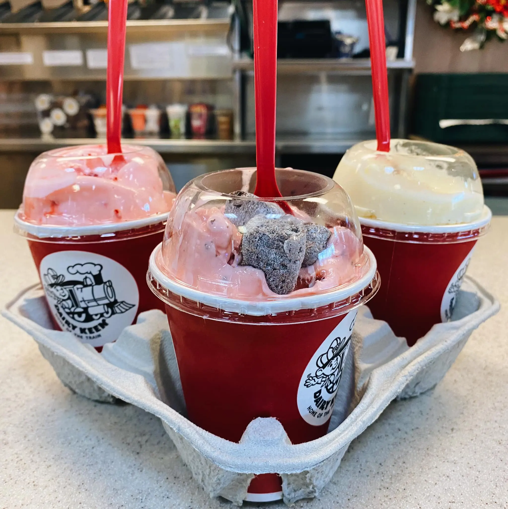

Dairy Keen
Dairy Keen is a must when visiting Heber city. There's a variety of options like fries, different shake flavors, burgers, and many more things. Stop by and try some amazing and delicious food!
Dairy Keen is a must when visiting Heber city. There's a variety of options like fries, different shake flavors, burgers, and many more things. Stop by and try some amazing and delicious food!
Cafe Galleria is a restaurant on Midway's main street. It's an italian based restaurant including foods like pizza, pasta, and french desserts. During the winter, they have these globes where you can dine it and enjoy the scenery of Midway!

The Junction includes a variety of food like pizza, burgers, sandwiches, tacos, wings, and many more items. Their pizza dough is made fresh daily and ingridients are bought locally!